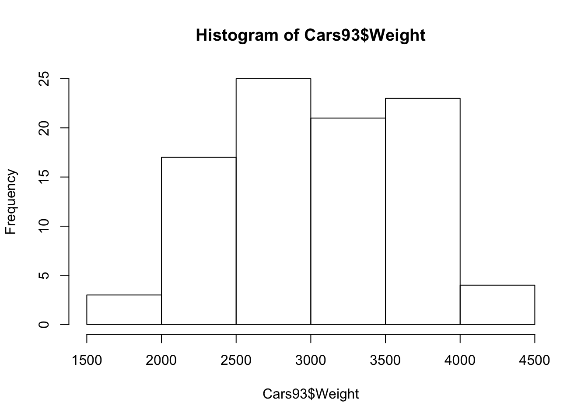
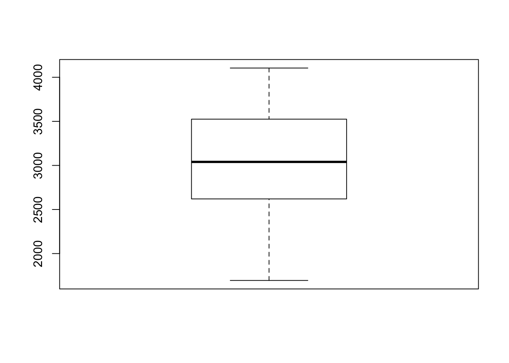
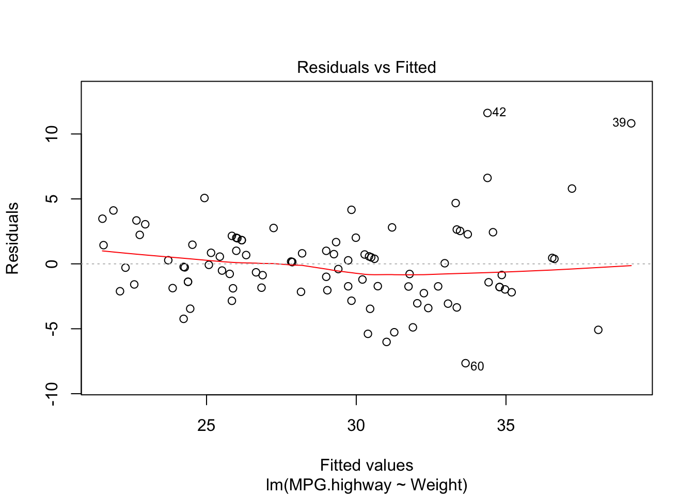
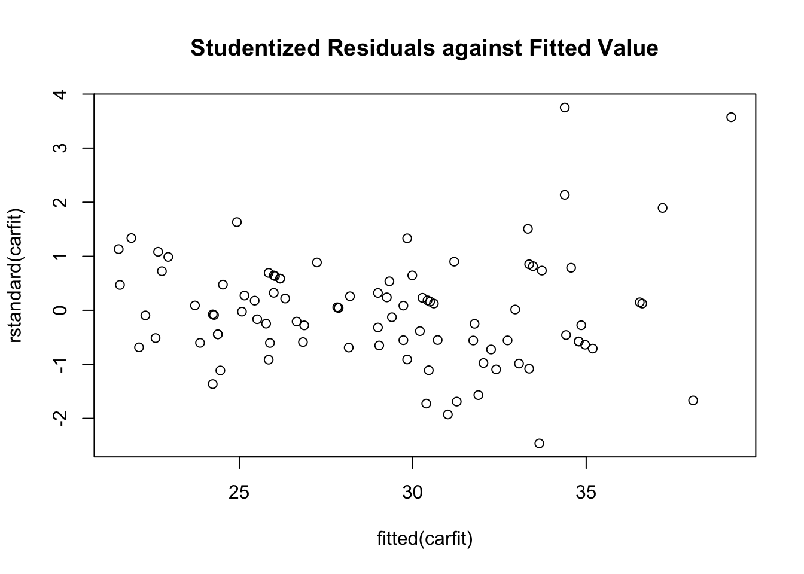
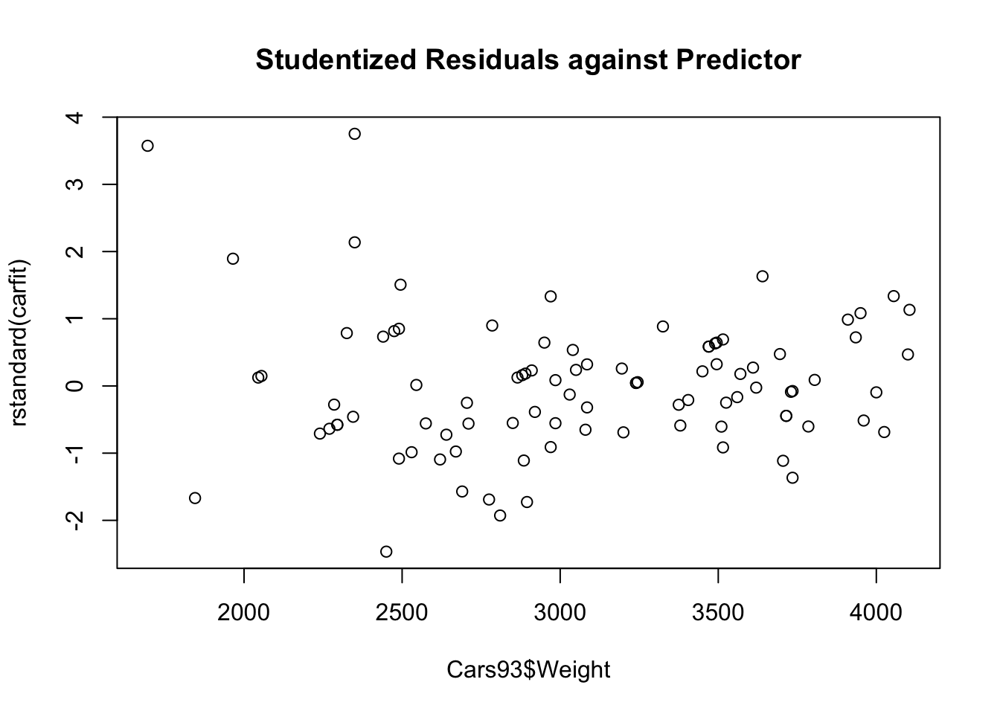
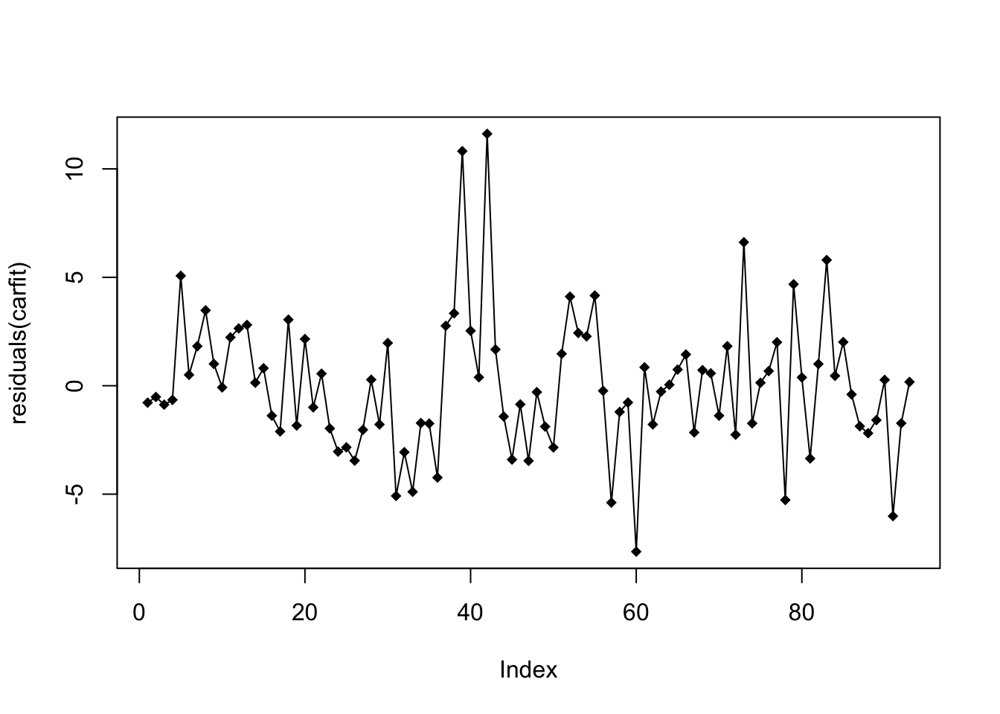
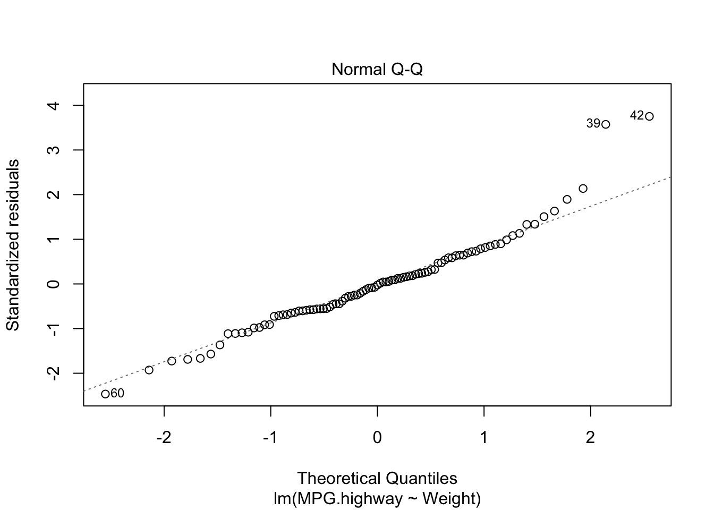
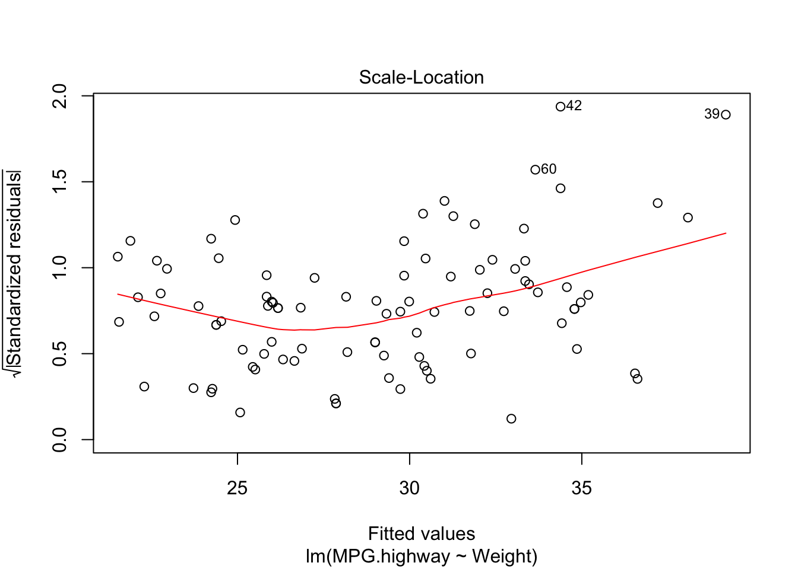
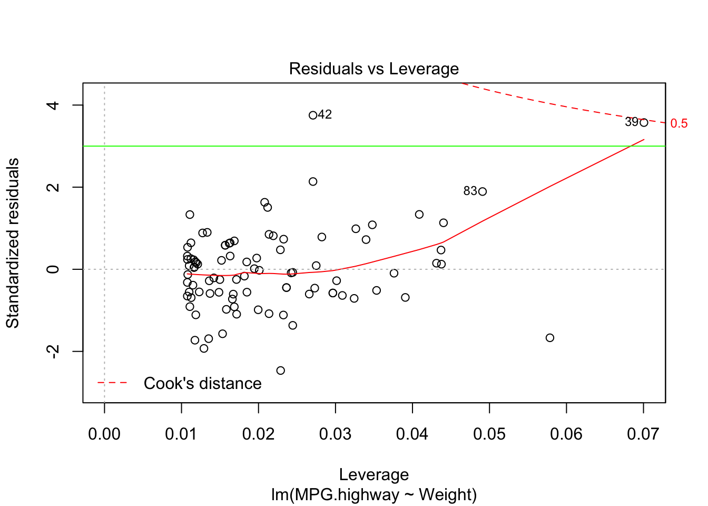

Last updated: 2019-10-31
Checks: 7 0
Knit directory: STA_463_563_Fall2019/
This reproducible R Markdown analysis was created with workflowr (version 1.4.0). The Checks tab describes the reproducibility checks that were applied when the results were created. The Past versions tab lists the development history.
Great! Since the R Markdown file has been committed to the Git repository, you know the exact version of the code that produced these results.
Great job! The global environment was empty. Objects defined in the global environment can affect the analysis in your R Markdown file in unknown ways. For reproduciblity it’s best to always run the code in an empty environment.
The command set.seed(20190905) was run prior to running the code in the R Markdown file. Setting a seed ensures that any results that rely on randomness, e.g. subsampling or permutations, are reproducible.
Great job! Recording the operating system, R version, and package versions is critical for reproducibility.
Nice! There were no cached chunks for this analysis, so you can be confident that you successfully produced the results during this run.
Great job! Using relative paths to the files within your workflowr project makes it easier to run your code on other machines.
Great! You are using Git for version control. Tracking code development and connecting the code version to the results is critical for reproducibility. The version displayed above was the version of the Git repository at the time these results were generated.
Note that you need to be careful to ensure that all relevant files for the analysis have been committed to Git prior to generating the results (you can use wflow_publish or wflow_git_commit). workflowr only checks the R Markdown file, but you know if there are other scripts or data files that it depends on. Below is the status of the Git repository when the results were generated:
Ignored files:
Ignored: .DS_Store
Ignored: .Rhistory
Ignored: .Rproj.user/
Ignored: analysis/.DS_Store
Untracked files:
Untracked: analysis/lab_hw3_sol.Rmd
Untracked: docs/figure/diagnotics.Rmd/
Untracked: docs/figure/lab_hw3_sol.Rmd/
Note that any generated files, e.g. HTML, png, CSS, etc., are not included in this status report because it is ok for generated content to have uncommitted changes.
These are the previous versions of the R Markdown and HTML files. If you’ve configured a remote Git repository (see ?wflow_git_remote), click on the hyperlinks in the table below to view them.
| File | Version | Author | Date | Message |
|---|---|---|---|---|
| Rmd | d72fef4 | dleelab | 2019-10-31 | created |
In this lab, we will use the data “Cars93”. It is in the “MASS” package. Cars were selected at random from among 1993 passenger car models that were listed in both the Consumer Reports issue and the PACE Buying Guide. Pickup trucks and Sport/Utility vehicles were eliminated due to incomplete information in the Consumer Reports source. Duplicate models (e.g., Dodge Shadow and Plymouth Sundance) were listed at most once. Further description can be found in Lock (1993).
The dataset contains 93 rows and 27 columns, the variables it includes are manufacturer, model, type, etc. We will use this data to look at regression diagnostics. We use the variable “Weight” as \(X\) and “MPG.highway” as \(Y\).
#install.packages("MASS")
library(MASS)
#Cars93 data MPG.highway(Y), Weight(X)
names(Cars93) [1] "Manufacturer" "Model" "Type"
[4] "Min.Price" "Price" "Max.Price"
[7] "MPG.city" "MPG.highway" "AirBags"
[10] "DriveTrain" "Cylinders" "EngineSize"
[13] "Horsepower" "RPM" "Rev.per.mile"
[16] "Man.trans.avail" "Fuel.tank.capacity" "Passengers"
[19] "Length" "Wheelbase" "Width"
[22] "Turn.circle" "Rear.seat.room" "Luggage.room"
[25] "Weight" "Origin" "Make" hist(Cars93$Weight)#histogram
boxplot(Cars93$Weight)#boxplot Based on the plots, no significant unusual values have been found in the predictor variable.
carfit=lm(MPG.highway~Weight,data=Cars93)
#plot(fit)plot(carfit,which=1)
Since the shows residuals are roughly located randomly aroudn the \(e_i=0\) line, the fitted line is also flat, no clear departutre from linearity can be found.
Alternative method is to plot the residuals again fitted value or the predictor directly.
plot(x=fitted(carfit),y=rstandard(carfit),main="Studentized Residuals against Fitted Value")
plot(x=Cars93$Weight,y=rstandard(carfit),main="Studentized Residuals against Predictor")
Since the data is collected from random sampling, it’s ok not to suspect the independence assumption. However, if we have data collected over time, we may want to check the residuals over time.
plot(residuals(carfit),pch=18,type="o")
We will look for a data that does not show clear pattern. If you find many positive/negative residuals clustered together, there may be some problem.
plot(carfit,which=2)
There is a noticeable skew in the points at the top of the plot. You may refer to the website for more information https://stats.stackexchange.com/questions/348438/qq-plot-and-x-y-line.
shapiro.test(carfit$residuals)
Shapiro-Wilk normality test
data: carfit$residuals
W = 0.95223, p-value = 0.001875#install.packages("nortest") # To use ad.test(). "nortest" package should be installed.
library(nortest)
ad.test(carfit$residuals)
Anderson-Darling normality test
data: carfit$residuals
A = 0.8778, p-value = 0.02364Based on the test result, we reject the null hypothesis and conclude the population (error) is not normally distributed.
plot(carfit,which=3)
From the plot, we find the variance in the middle is much smaller than the variance in the right end.
#install.packages("lmtest")
library(lmtest)#to use the bptest functionLoading required package: zoo
Attaching package: 'zoo'The following objects are masked from 'package:base':
as.Date, as.Date.numericlibrary(zoo)
bptest(MPG.highway~Weight,data=Cars93)
studentized Breusch-Pagan test
data: MPG.highway ~ Weight
BP = 11.495, df = 1, p-value = 0.0006977Based on the test, we reject the null hypothesis and condluce the error variance is not constant.
plot(carfit,which=5)
dim(Cars93)[1] 93 27abline(h=3,col="green")
sessionInfo()R version 3.6.1 (2019-07-05)
Platform: x86_64-apple-darwin15.6.0 (64-bit)
Running under: macOS Mojave 10.14.6
Matrix products: default
BLAS: /Library/Frameworks/R.framework/Versions/3.6/Resources/lib/libRblas.0.dylib
LAPACK: /Library/Frameworks/R.framework/Versions/3.6/Resources/lib/libRlapack.dylib
locale:
[1] en_US.UTF-8/en_US.UTF-8/en_US.UTF-8/C/en_US.UTF-8/en_US.UTF-8
attached base packages:
[1] stats graphics grDevices utils datasets methods base
other attached packages:
[1] lmtest_0.9-37 zoo_1.8-6 nortest_1.0-4 MASS_7.3-51.4
loaded via a namespace (and not attached):
[1] workflowr_1.4.0 Rcpp_1.0.2 lattice_0.20-38 digest_0.6.20
[5] rprojroot_1.3-2 grid_3.6.1 backports_1.1.4 git2r_0.26.1
[9] magrittr_1.5 evaluate_0.14 stringi_1.4.3 fs_1.3.1
[13] whisker_0.3-2 rmarkdown_1.15 tools_3.6.1 stringr_1.4.0
[17] glue_1.3.1 xfun_0.9 yaml_2.2.0 compiler_3.6.1
[21] htmltools_0.3.6 knitr_1.24